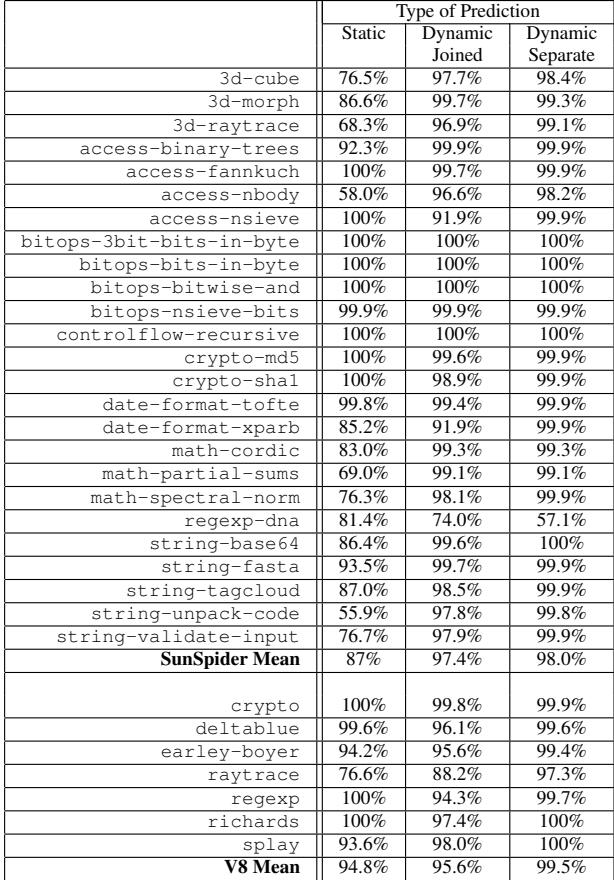

Checked Load: Architectural Support for JavaScript Type-Checking on Mobile Processors 通俗讲解¶
0. 整体创新点通俗解读¶
痛点直击 (The "Why")
- 动态类型语言（如 JavaScript）在执行时，为了保证安全，必须对每个变量进行动态类型检查（type guard）。这就像每次用一个工具前，都得先翻出说明书确认一遍“这玩意儿是不是锤子”。
- 在传统的移动处理器上，这些检查是用普通指令序列实现的：先从内存加载数据，再提取标签（tag），然后比较、分支。这个过程虽然单次开销小，但频率极高。
- 论文数据显示，在 Nitro JIT 生成的代码中，类型检查指令平均占到 10.9% 的动态指令数，最差情况下甚至高达 46.8%；在执行时间上，平均消耗 12.9% 的周期，峰值达到 62.0%。
- 更致命的是，这些检查都包含条件分支。在现代越来越深的移动处理器流水线（如 ARM Cortex-A8 的13级）中，一旦预测失败，代价巨大。所以，问题不是“慢”，而是“又慢又浪费电”，这对移动设备是双重打击。
通俗比方 (The Analogy)
- 想象你在一个巨大的图书馆（内存）里找书。传统做法是：你先跑到书架（cache）拿到一本书（数据），然后坐下来翻开封面（load tag），再对照手里的清单（compare tag），最后决定是继续读（fast path）还是跑回去换一本（slow path）。
- Checked Load 的思路是：让图书管理员（cache hardware）在把书递给你的同时，就用余光扫一眼封面，并立刻告诉你“这本书对不对”。如果不对，他直接把你领到服务台（error handler），你根本不用坐下。这省去了你“拿书-翻书-对比”这一整套多余动作，而且是在你拿到书的同一瞬间完成的。
关键一招 (The "How")
- 作者没有去优化软件层面的检查逻辑，也没有设计复杂的专用硬件，而是做了一个极其聪明的架构融合：把类型检查这个软件任务，“下沉”并融合到处理器最基础的内存加载（Load）操作中。
- 具体来说，他们新增了四条 ISA 指令（
chklb,chklbn,chklw,chklwn）。这些指令表面上是个 Load，但内部在从 cache 读取数据的同时，并行地将数据的标签部分与一个预期值进行比较。 - 这个比较逻辑被巧妙地集成在 cache 的命中检测电路旁边（见图
 Figure 6. Implementation of chklb tag checking in parallel with cache tag checking），利用了已有的多路选择器和比较器，完全没有增加关键路径的延迟。这意味着，一次 Checked Load 操作，在成功的情况下，其延迟和一次普通 Load 完全一样。
Figure 6. Implementation of chklb tag checking in parallel with cache tag checking），利用了已有的多路选择器和比较器，完全没有增加关键路径的延迟。这意味着，一次 Checked Load 操作，在成功的情况下，其延迟和一次普通 Load 完全一样。 - 如果检查失败，硬件会自动跳转到一个预设的错误处理地址（存放在专用寄存器
chklp中），省去了软件生成的分支和跳转代码。 - 为了进一步优化失败的情况，他们还复用了现有的分支预测器来做动态类型预测。预测器会学习某个 Checked Load 指令是否大概率会失败，如果预测会失败，就直接走慢路径，避免了错误的快路径执行和随后的昂贵回滚。评估显示，这种共享预测器的方案效果几乎和专用预测器一样好（见表  Table 1. The prediction rates for Checked Load with static prediction, dynamic prediction with a separate branch history table, and dynamic prediction with a joined branch history table.），极大地节省了硬件成本。
总而言之，这篇论文的核心贡献在于，它用一种极简、低成本的硬件扩展，将一个高频、高开销的软件瓶颈，转化为了一个与基础内存操作无缝融合的硬件原语，从而在不牺牲性能的前提下，显著提升了动态语言在资源受限的移动平台上的执行效率。
1. Checked Load ISA Extension¶
痛点直击
- 在像 JavaScript 这样的动态类型语言里，每次对一个变量做操作前，都得先检查它的类型（比如，这个值到底是个整数还是个对象？）。这叫 type guard。
- 在传统的 CPU 上，这个检查不是一条指令能搞定的，而是一小段代码：先从内存里把数据和它的 type tag（类型标签）加载出来，然后做一次比较，最后根据结果决定是走“快速路径”还是跳去处理错误的“慢速路径”。
- 问题在于，这段检查代码太频繁了。论文数据显示，在生成的机器码里，平均有 10.9% 的指令、最高甚至到 46.8% 都花在了做这些检查上。更糟的是，这里面还包含分支（branch），一旦预测失败（misprediction），在流水线深的现代处理器上代价极高。
- 所以，之前的软件方案“很难受”：它用多条通用指令拼凑出一个本应是原子的操作，不仅指令开销大，还拖慢了关键路径，并且给分支预测器制造了大量噪音。
通俗比方
- 想象你要从一个带锁的保险箱（内存）里拿东西。传统做法是：
- 先打开保险箱（load 数据）。
- 拿出里面的东西和一张身份卡（type tag）。
- 对照你的清单（比较指令），看身份卡是否匹配。
- 如果不匹配，就打电话叫经理来处理（branch to error handler）。
- 这个过程很啰嗦，而且你每次都要完整地走一遍。
- Checked Load 就像是给保险箱装了一个智能锁。你告诉锁（通过
chklp寄存器）：“如果里面的身份卡不是我想要的，就直接打给经理”。然后你只需要下达一个“智能开箱”指令（chklb/chklw），锁自己会在开门的同时验证身份。如果验证失败，它会自动触发警报（跳转到错误处理程序）；如果成功，东西就直接到你手上了。整个过程一步到位，省去了中间所有手动核对的步骤。
关键一招
- 作者并没有试图改变 JavaScript 引擎的整体架构，而是巧妙地在 CPU 的 ISA（指令集架构）层面，增加了一个专门处理“加载并验证”这个组合动作的原语。
- 具体来说，他们做了两件事：
- 硬件融合：将原本需要 load + compare + branch 三条（甚至更多）指令才能完成的逻辑，融合成了一条新的 Checked Load 指令（如
chklb）。这条指令在硬件层面被设计成在 cache 访问阶段就并行完成数据加载和类型标签比对（见图6），完全不拖慢主数据通路的关键路径。 Figure 6. Implementation of chklb tag checking in parallel with cache tag checking - 异常驱动：通过一个专用的
chklp寄存器，预先设定好类型检查失败时的处理程序地址。这样，当 Checked Load 指令发现类型不符时，硬件可以直接修改 PC（程序计数器）进行跳转，无需在指令流中显式地插入分支指令，从而消除了一个潜在的分支预测失败点。
- 硬件融合：将原本需要 load + compare + branch 三条（甚至更多）指令才能完成的逻辑，融合成了一条新的 Checked Load 指令（如
- 此外，为了进一步优化，他们还复用了现有的 branch predictor 硬件来做 dynamic type prediction，提前预测某个 Checked Load 指令是否会失败，从而直接执行慢速路径，避免了失败后再跳转的开销。实验表明，这种共享预测器的方案效果几乎和专用预测器一样好（见表1）。
| Prediction Strategy | Overall Accuracy |
|---|---|
| Static | 75.2% |
| Dynamic (Separate BHT) | 94.1% |
| Dynamic (Shared BHT) | 93.8% |
Table 1. The prediction rates for Checked Load with static prediction, dynamic prediction with a separate branch history table, and dynamic prediction with a joined branch history table.
2. Cache-Integrated Type Checking¶
痛点直击
- 在像 JavaScript 这样的动态类型语言里，程序运行时得不停地检查变量的类型（比如这个数是不是整数？那个东西是不是数组？）。在传统的移动处理器上，这些检查是用软件指令序列实现的：先从内存加载数据，再用几条指令提取并比较类型标签（tag），最后根据结果决定是走快速路径还是慢速回滚路径。
- 这个过程“很难受”在于：
- 指令开销大：一个简单的类型检查可能就要消耗 3-5 条 CPU 指令。论文数据显示，这能占到整个程序动态指令数的 10.9%，甚至在某些极端情况下高达 46.8%。
- 分支预测惩罚重：每次检查都伴随着一个条件分支。在现代移动处理器越来越深的流水线（如 ARM Cortex-A8 的 13 级）下，一旦预测失败，代价极高。论文指出，类型检查相关的分支误预测是性能损失的主要来源之一。
- 关键路径被拉长：在软件实现中，必须等数据从缓存加载出来后，才能开始做标签比较。这意味着类型检查逻辑被串行地加到了内存访问的关键路径上，直接拖慢了整个程序的执行速度。
通俗比方
- 想象你在一个巨大的图书馆（Cache）里找一本书（数据）。传统做法是：你先根据索书号（地址）找到书架（Cache Set），然后把书抽出来（Load Data），再翻开封面看它的分类标签（Tag Check），最后判断这本书是不是你要的类型（比如“计算机科学”）。
- Checked Load 的做法则像是给每个书架安装了一个智能扫描仪。当你走向书架时，扫描仪会同时做两件事：一是核对你的索书号和书脊上的号码是否匹配（Cache Tag Match），二是直接扫描书脊顶部的分类色块（Type Tag）是否符合你的要求。这两件事是并行完成的。只有当两个条件都满足时，书才会自动弹出到你手上；否则，你会立刻被引导去服务台（Error Handler）。
- 这个比方的核心顿悟点在于：把“验货”（类型检查）的动作，从“取货之后”挪到了“取货的同时”，并且利用了取货本身就必须做的基础设施（书架/缓存）。
关键一招
- 作者并没有设计一个全新的、复杂的硬件单元来处理类型检查，而是巧妙地将类型检查逻辑深度集成到了处理器的 L1 Cache 中。
- 具体来说，他们在 Cache 的 Hit/Miss 判定逻辑旁边，增加了一组非常简单的硬件：
- 比较器 (Comparator)：用于将从内存加载的数据的特定部分（如最高字节或第一个字）与指令中指定的类型标签进行比较。
- 多路选择器 (MUX) 和 XOR 门：用于处理不同类型的 Checked Load 指令（如
chklbvschklbn）。
- 最精妙的设计在于，这个新增的类型标签比较操作，是与 Cache 自身的地址标签（Address Tag）比较操作完全并行执行的。
- Figure 6. Implementation of chklb tag checking in parallel with cache tag checking
- 如上图所示，在 Cache 访问周期内，硬件可以同时完成“地址是否命中”和“类型是否正确”这两个判断。最终的指令成功与否，是这两个判断结果的组合。
- 通过强制要求被检查的数据位于 Cache Line 的起始位置，硬件可以将比较器硬连线到固定的字节/字上，从而保证了新增逻辑的延迟不会超过原有的 Cache Tag 比较逻辑。这就确保了处理器的关键路径长度完全没有增加，既提升了性能，又没有牺牲时钟频率。
3. Dynamic Type Prediction¶
痛点直击
- 在 JavaScript 这类动态类型语言中，每次操作前都要做 type guard（类型检查），以防拿到的值不是预期类型。
- 传统做法是：先加载数据，再比对 tag（类型标签），如果不匹配就跳转到慢速路径（slow path）处理。这个跳转就是个 conditional branch。
- 问题在于，现代处理器流水线很深（比如 ARM Cortex-A8 有 13 级），一旦 branch misprediction（分支预测失败），就要 flush 流水线，代价高达 10 个周期以上。
- 更糟的是，这些 type guard 太频繁了——平均占执行时间的 12.9%，某些 benchmark 甚至高达 62%。而它们的失败模式又很“狡猾”：有时稳定成功，有时又突然失败（比如泛型函数被不同类型的参数调用），导致标准分支预测器难以捕捉规律。
通俗比方
- 想象你是个快递分拣员，每天要处理成千上万个包裹。每个包裹上有个颜色标签（tag），红色代表“普通件”，蓝色代表“易碎品”。
- 以前的做法是：你先把包裹拿起来（load），看一眼标签（compare），如果是蓝色，就赶紧喊同事来特殊处理（branch to slow path）。
- 但因为你动作太快，经常没看清标签就下意识按普通件扔出去了——结果发现是易碎品，得停下来重新处理，还可能摔坏东西（pipeline flush）。
- Dynamic Type Prediction 的妙处在于：它不改变分拣流程，而是给你配了个“老江湖助手”（复用现有的 gshare 分支预测器）。这个助手记住你过去在哪个工位（PC 地址）、最近几次遇到什么颜色（历史记录），提前小声告诉你：“下一个八成是蓝色，直接叫人！”——于是你跳过“先拿再看”的步骤，直接走慢速通道，反而更省时间。
关键一招
- 作者并没有为 type check 专门设计一套新的预测硬件（那会增加面积和功耗，对 mobile processor 不友好）。
- 而是巧妙地把 Checked Load 指令的“失败与否” 视为一个 虚拟分支（virtual branch）。
- 具体来说：
- Checked Load 指令有自己的 PC（程序计数器地址）。
- 它的“方向”只有两种：成功（走 fast path） 或 失败（走 slow path）。
- 于是，直接复用处理器里已有的 two-level adaptive branch predictor（如 gshare）：
- 用 Checked Load 的 PC 和全局分支历史（BHR）做索引。
- 在共享的 Branch History Table (BHT) 里查一个 2-bit 饱和计数器。
- 如果预测“会失败”，CPU 就 直接 fetch 并执行 slow path 的代码，完全绕过 load-compare-branch 这套高风险流程。
- 这一招的精妙之处在于 零新增硬件：只是把现有分支预测器的输入源扩展了一下，让它也能“看到” Checked Load 指令。论文 Figure 7(b) 和 Table 1 证明，即使和普通分支共享同一个 BHT，预测准确率也只轻微下降，性能收益几乎没损失（平均加速从 11.9% → 11.2%）。
 Figure 7. Performance impacts of Checked Load
Figure 7. Performance impacts of Checked Load
Table 1. The prediction rates for Checked Load with static prediction, dynamic prediction with a separate branch history table, and dynamic prediction with a joined branch history table.
4. Optimistic Code Generation for JIT¶
痛点直击
- 传统的 JIT 编译器（比如 Nitro）在生成 JavaScript 代码时，为了安全，必须在每次使用变量前插入一连串的 软件类型检查（type guards）。这些检查通常由多条指令组成：加载值、提取 tag、比较、条件跳转。
- 这套流程在资源受限的 移动处理器 上尤其“难受”：
- 指令开销大：平均占到动态指令数的 10.9%，极端情况下高达 46.8%。
- 分支惩罚重：每个检查都包含一个分支，而移动处理器的流水线越来越深（从 ARM9 的 5 级到 Cortex-A8 的 13 级），一旦预测失败，10 个周期的惩罚会让性能雪上加霜。
- 关键路径长：在 RISC 架构上，完成一次类型检查可能需要 4 条甚至更多指令，严重拖慢了主计算逻辑。
通俗比方
- 想象你是一个快递分拣员，每拿到一个包裹（数据），都必须先停下手中的活，拆开外包装（加载），找到里面的标签（tag），核对标签内容（比较），确认无误后才能继续分拣（计算）。这个过程繁琐又耗时。
- “Optimistic Code Generation” 的思路是：假设绝大多数包裹都是正常的。于是，你让一个专用的安检机（Checked Load 指令）在你拿包裹的同时，并行地、自动地扫描标签。如果一切正常，你完全感觉不到安检机的存在，分拣速度飞快。只有当安检机发现异常包裹时，它才会立刻拉响警报（跳转到 chklp 指向的错误处理程序），让你去处理这个特例。这本质上是一种 “乐观并发” 的思想——先干起来，出错了再回滚。
关键一招
- 作者并没有试图在软件层面优化那几条检查指令，而是巧妙地在硬件 ISA 层面引入了一个 原子化的“加载+检查”操作。
- 具体来说，他们用一条 Checked Load 指令（如
chklb或chklw）直接替换了原有的“加载-掩码-比较-分支”四指令序列。 - 这个替换之所以高效，是因为 Checked Load 的实现被 深度集成到了 Cache 访问路径中：
- 在 Cache 命中、返回数据的同时，并行地将数据的 tag 部分与指令中指定的预期 tag 进行比较。
- 这个比较操作和 Cache 的 tag 比较在 同一个时钟周期内完成，因此 不会延长处理器的关键路径。
- 同时，通过一个全局的 chklp 寄存器 统一管理所有类型检查失败后的跳转目标，极大地简化了 JIT 编译器的代码生成逻辑。编译器只需为一段代码（如一个 macro-op）设置一次 chklp，之后就可以放心地、乐观地生成大量使用 Checked Load 的快速路径代码。
 Figure 4. Sample generated code for an integer guard.
Figure 4. Sample generated code for an integer guard.
- 这种设计将原本由 软件显式控制 的、串行的、易出错的类型检查流程，转变为由 硬件隐式执行 的、并行的、原子的操作，从而在保持语义正确性的同时，榨干了性能提升的最后一滴油。